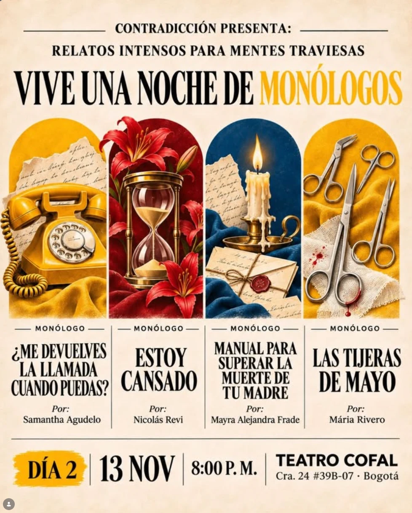
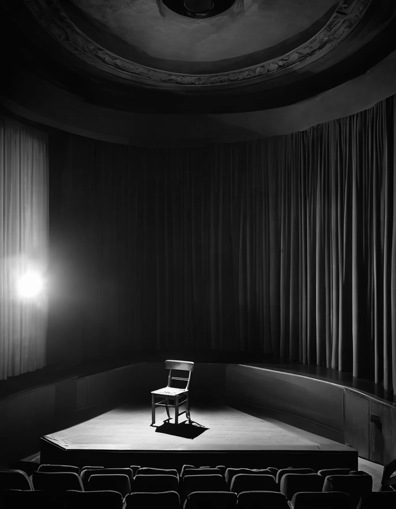
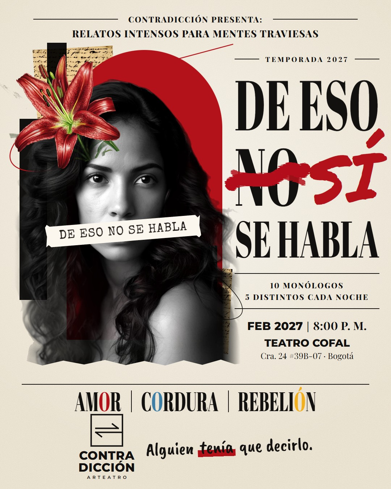
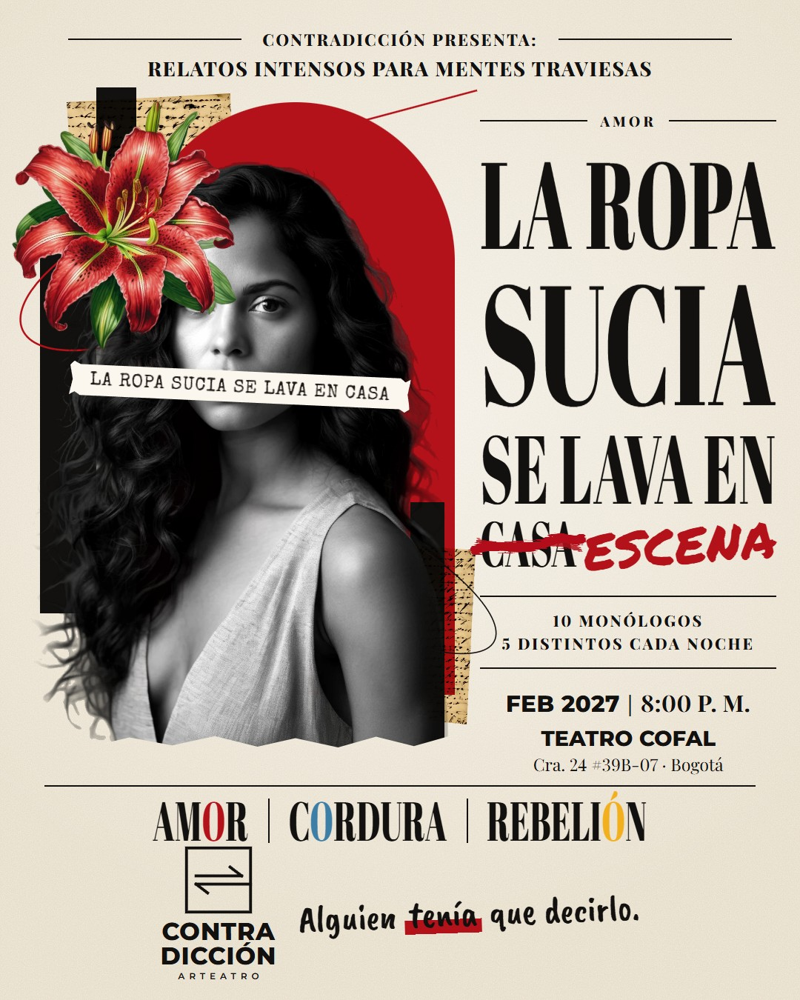
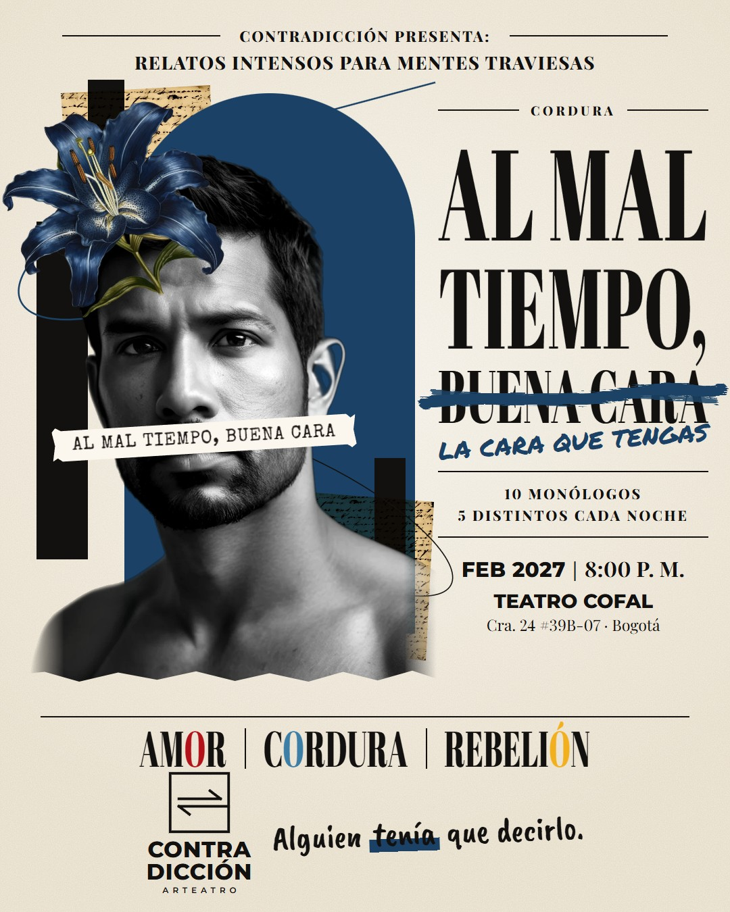
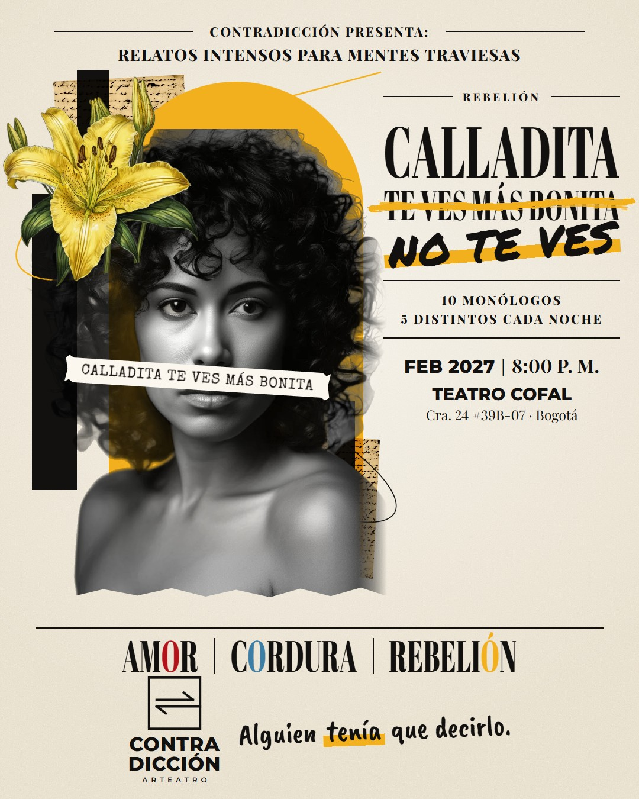
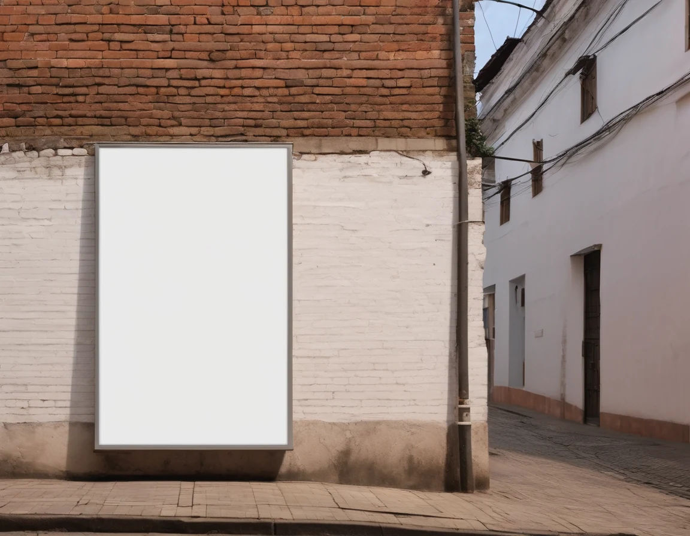

Una campaña para que Relatos Intensos sea el show de monólogos mejor valorado de Bogotá.
William Fonseca y Mariana Silva
Docente: Rüdiger Stuart González
Politécnico Grancolombiano · Noviembre de 2026
Lo que nos pidió el cliente
la compañía
sus shows
«Evidenciar que Relatos Intensos es el show de monólogos mejor valorado por asistentes y conocedores del teatro: una alternativa imperdible en la escena cultural de Bogotá para 2027».
Relatos Intensos, formato monólogo. La campaña sale en febrero de 2027.
Cada historia la concibe, la escribe y la actúa la misma persona.
Hombres y mujeres de 25 a 35 años, inquietos, con recursos, que buscan planes íntimos lejos de lo masivo.
Fuimos al teatro

¿Me devuelves la llamada cuando puedas?
Samantha AgudeloLa maternidad que no se planeó y el embarazo que se pierde.
Estoy cansado
Nicolás ReviEl cansancio de fingir en las aplicaciones de citas y buscar afecto por inercia.
Manual para superar la muerte de tu madre
Mayra Alejandra FradeEl duelo que no cabe en un manual de productividad.
Las tijeras de mayo
María RiveroLa violencia que una víctima carga en silencio.
- Sala pequeña y llena.
- Gente de 25 a 35 años que llegaba de la oficina, de nivel medio-alto y alto.
- Aire bohemio y libre, muy del Parkway: no siguen todas las reglas, pero tampoco son rebeldes.
- Entendían el humor: se reían y al minuto estaban en silencio.
- Al final se quedaron para la foto y para conversar.
Las cuatro historias son confesiones. Empiezan con humor, terminan en un golpe y dicen en voz alta lo que normalmente se calla.
Laura, 29 años «la que siempre está bien»
Profesional con posgrado en curso. Trabaja en una oficina: marca, diseño o tecnología.
En Teusaquillo o Chapinero, sola o con su pareja. Nivel medio-alto.
Una copa en el Parkway, cine de autor, librerías y pódcast largos. Va a terapia.
Por las historias de Instagram de sus amigos. Decide en el grupo de WhatsApp y compra en línea.
Curiosa y crítica. Desconfía de lo masivo. Se ríe de lo que duele.
Descubrir algo antes que los demás… y contarlo.
Lo que siente y lo que le falta
Un plan entre semana, cerca, corto, fácil de comprar y que valga la plata.
Permiso para hablar
Sentir algo de verdad y oír a alguien decir lo que ella calla.
Tener de qué conversar después y descubrir talento antes que el resto.
¿Si ha visto cuando alguien…
…manda un audio de cinco minutos y remata con «bueno, ya, no era nada»?
R/. Dijo mucho para no decir lo importante.…ensaya en la ducha la conversación que nunca va a tener?
R/. Ese monólogo le sale perfecto. Lástima que nadie lo oye.…responde «todo bien» cuando no está bien?
R/. Es más fácil que explicar.…cambia de tema en el almuerzo familiar porque «de eso no se habla»?
R/. En toda casa hay un tema que nadie toca.…le cuenta a un desconocido lo que no le cuenta a su mejor amigo?
R/. Con un extraño no hay nada que perder.…se ríe en el teatro justo en la parte más dura?
R/. Es la risa nerviosa del que se reconoció.…sale de la función y se queda una hora hablando en la puerta?
R/. Lo que oyó le soltó la lengua.Hablamos muchísimo, pero lo que importa nos lo callamos. Y cuando alguien lo dice por nosotros, se nos suelta la lengua.
¿Qué pasaría si…
…dejáramos de vender «teatro» y vendiéramos lo que pasa adentro: alguien dice lo que tú callas?
El beneficio…el enemigo no fuera la competencia, sino los dichos que nos enseñaron a callar?
El villano…una marca que se llama Contradicción saliera a contradecir esos dichos, uno por uno?
La mecánica…cada pilar tuviera su propio dicho para tachar: amor, cordura y rebelión?
El sistema…el aviso se viera como una boca tapada que alguien destapa?
La imagen…la crítica la escribiera el público al salir, con una frase que ya usa: «alguien tenía que decirlo»?
La prueba…cada persona pudiera tachar su propio dicho en redes?
Lo digitalLos miedos y lo que nos dicen
A perder la noche en un plan aburrido.
A no entender: «el teatro no es para mí».
A incomodar: «mejor no digo nada».
A que me juzguen por lo que pienso o siento.
A quedar expuesto y romperme delante de otros.
A ser el único que se siente así.
Emociones de base: sorpresa, alegría, tristeza, miedo, ira y desagrado.

«Lo que más necesito decir es justo lo que me enseñaron a callar».
Lo que callo del amor, lo que callo de mi cabeza y lo que callo por no llevar la contraria.
En un monólogo, alguien lo dice por mí. Por eso salgo con ganas de hablar.
No es la competencia: son los dichos que nos enseñaron a quedarnos callados.
Cómo sacamos la idea
La primera idea, la obvia
«Monólogos escritos y actuados por la misma persona».
Es la ventaja competitiva, pero dicha así no emociona. La guardamos como razón para creer.
¿Qué hace mal la categoría?
- El stand-up se quedó con la palabra «monólogos» y todo lo resuelve con chiste.
- El microteatro vende el formato: 15 minutos, 15 personas.
- El teatro de autor le habla al que ya va a teatro.
- Casi todos anuncian cara + título + fecha. Nadie promete lo que te pasa adentro.
11,8 % de los colombianos fue a teatro, ópera o danza (DANE, 2020). · 91,4 % dice que su salud mental es buena, y la ansiedad se cuadruplicó (ENSM 2025).
Un elemento al azar: los dichos de la abuela
¿Y si los cruzamos con el nombre de la marca?
Si la marca se llama Contradicción, que haga lo que dice su nombre: llevarle la contraria al dicho.
Contra el dicho
Contradicción le lleva la contraria a los dichos que nos enseñaron a callar.
El título que atrapa el ojo: un dicho, tachado y corregido.
Crecimos entre dichos que mandan a callar. Diez personas se suben solas a decir lo que escribieron con su propia vida, y tú, a oscuras, descubres que no eras el único.
El grito de batalla. Ya se dice en la calle y sirve de sello para las reseñas del público.
10 monólogos, 5 distintos cada noche. Cada uno escrito y actuado por la misma persona: talento emergente de las academias más reconocidas de Bogotá. Amor, cordura y rebelión en sala íntima. Febrero de 2027 · 8:00 p. m. · Teatro Cofal · Boletas en Tickean.
5 preguntas que desnudan la idea
¿Deja claro el beneficio o la ventaja, y se entiende?
Sí. Aquí se dice lo que se calla, y lo dice quien lo escribió.
¿Es diferente a lo que hace la competencia?
Sí. La categoría muestra cara, título y fecha. Nadie promete un efecto ni usa los dichos.
¿Se resume en una imagen o en una frase?
Sí. Un dicho tachado: «De eso no sí se habla».
¿Inspira varios anuncios y piezas?
Sí. Hay un dicho por pilar, por monólogo y por temporada. Y cada espectador puede tachar el suyo.
¿Crece en video, audio y gráfica? ¿Tiene kilometraje?
Sí. En audio es una voz que lleva la contraria; en video, un monólogo; en gráfica, un tachón. Alcanza para las 4 temporadas.

El mensaje, pieza por pieza
De eso no sí se habla.
Breve, atrapa por emoción y completa la imagen: la tira tapa la boca, el titular la destapa.
Amor · Cordura · Rebelión
10 monólogos, 5 distintos cada noche
Hacen pausa en la lectura y destacan lo que hay: los tres pilares y la oferta.
Nos enseñaron que calladitos nos vemos más bonitos. Diez artistas pensaron lo contrario: escribieron lo que casi nadie se atreve a decir y se suben solos a decirlo, a un metro de ti. Vas a reírte donde no toca, a quedarte en silencio y a salir con ganas de hablar. Relatos Intensos para Mentes Traviesas, el show de monólogos de Contradicción Arteatro. Febrero de 2027 · Teatro Cofal · Boletas en Tickean.
Sencillo y directo. Explica la ventaja: lo escribe y lo actúa la misma persona.
Alguien tenía que decirlo.
Va al final para sellar la recordación. Resume la relación con el público: lo decimos por ti.
El Key Visual
Alguien tenía que decirlo.
Un rostro con la boca tapada por una tira de papel: el dicho que nos calla. En el titular, una brocha tacha el «no» y escribe «sí».
La tira es lo que nos enseñaron. El tachón es lo que hace el show: decirlo. La ventaja (lo escribe y lo actúa la misma persona) vive en el subtitular.
Es la línea de sus afiches: papel crema, arcos, retrato en blanco y negro, lirios y manuscritos. Rojo amor, azul cordura y amarillo rebelión. La letra de máquina es lo que nos dictaron; el brochazo a mano, lo que decimos nosotros.
Un KV maestro, tres versiones por pilar, piezas para Instagram, afiche de calle y la boleta.
PARA MENTES TRAVIESASTemporada 1 · Febrero 2027 · 8:00 p. m.
Teatro Cofal · Cra. 24 #39B-07
1 mente
traviesa
En un show, el empaque es la boleta: lo que la gente compra, guarda y sube a sus historias.
Una idea con kilometraje




táchalo y etiquétanos.Alguien tenía que decirlo.
«Alguien tenía que decirlo: salí y llamé a mi mamá».
Asistente · función de febreroEjemplode formato
La historia, antes del video
Laura, 29 años. Aparenta estar bien y desconfía de lo masivo. Le interesan las historias honestas. Su intención: atreverse a decir lo que calla.
Cuándo: un jueves de febrero de 2027, 8:00 p. m. Dónde: la casa de su infancia, la oficina y un teatro pequeño del Parkway.
Conflicto: le enseñaron a callar. Emoción: un miedo que se vuelve sorpresa. Sentimiento: alivio y admiración.
Íntimo y confesional. Provocador al comienzo, reflexivo en el medio y de alivio al final.
A Laura le enseñaron a callar con dichos: de niña, en la casa y en el trabajo.
Aprendió tan bien que lo más importante nunca lo ha dicho. Una noche, una desconocida sola en escena dice justo lo que ella calla.
Alguien le llevó la contraria al dicho. Laura sale con la boca destapada: de eso sí se habla.
De niña me dijeron: calladita te ves más bonita.
En la casa: la ropa sucia se lava en casa.
En el trabajo: al mal tiempo, buena cara.
Y aprendí. Aprendí tan bien, que lo más importante que tengo por decir, nunca lo he dicho.
Hasta que una noche, en un teatro pequeño, una desconocida se paró sola frente a mí, y lo dijo. Todo lo que yo me callo.
Nadie me había llevado la contraria tan bonito.
De eso, sí se habla.
El video: un monólogo de 47 segundos
| Video | Audio | Texto / Graphics |
|---|---|---|
| Papel crema. Retrato en blanco y negro de Laura dentro de un arco rojo. Una tira de papel cae y le tapa la boca. | Golpe seco de papel. LOC OFF (Laura): «De niña me dijeron: calladita te ves más bonita». | Tira a máquina: «Calladita te ves más bonita». |
| Caen dos tiras más, una sobre otra, hasta taparle media cara. La cámara se acerca despacio. | Dos golpes de papel. LOC OFF: «En la casa: la ropa sucia se lava en casa. En el trabajo: al mal tiempo, buena cara». | Tiras: «La ropa sucia se lava en casa» y «Al mal tiempo, buena cara». |
| Solo quedan sus ojos. La imagen se oscurece poco a poco. | Nota grave sostenida. LOC OFF: «Y aprendí. Aprendí tan bien, que lo más importante que tengo por decir, nunca lo he dicho». | Texto pequeño: «…nunca lo he dicho». |
| Negro. Un arco de luz se abre como telón: escenario pequeño, una silla y un solo reflector. | Entra el piano. LOC OFF: «Hasta que una noche, en un teatro pequeño, una desconocida se paró sola frente a mí, y lo dijo. Todo lo que yo me callo». | Rótulo: «Un teatro pequeño · Bogotá». |
| Vuelve el retrato. Las tiras se rasgan y salen volando. Florece un lirio rojo. Laura queda con la boca destapada. | Tres rasgados de papel; la música sube. LOC OFF: «Nadie me había llevado la contraria tan bonito». | Sin texto: manda la imagen. |
| Tres arcos (rojo, azul y amarillo) con tres rostros. | LOC OFF (voz de marca): «Relatos Intensos para Mentes Traviesas. Diez monólogos escritos y actuados por quien los vivió». | «Amor · Cordura · Rebelión». «10 monólogos, 5 distintos cada noche». |
| Papel. El titular llena la pantalla: una brocha roja tacha el «no» y escribe «sí». | Trazo de brocha. LOC OFF (Laura): «De eso, sí se habla». | Titular: «De eso |
| Cierre con logo, fecha y lugar. | Acorde final. LOC OFF (marca): «Contradicción Arteatro. Alguien tenía que decirlo». | Logo, eslogan y «Febrero 2027 · Teatro Cofal · Boletas en Tickean». |
Voces clonadas con IA local (con permiso de sus dueños): Adriana es Laura; William es la voz de la marca. Imágenes generadas con IA.
Así cumple lo que pidió el cliente
Lanzamiento
«De eso sí se habla»
«La ropa sucia se lava en escena»
«Al mal tiempo, la cara que tengas»
«Calladita no te ves»
El sello «Alguien tenía que decirlo»
Al salir, cada persona escanea un código, califica de 1 a 5 y completa la frase. Sus frases y el puntaje son las piezas de la semana siguiente.
Función de conocedores
Una noche previa para maestros de las academias, críticos y directores. Sus frases salen con nombre y cargo.
«Tráelo a que le lleven la contraria»
Cada asistente recibe un dicho para tachar y un enlace para invitar a alguien. El público de hoy trae al de mañana.
«Tacha tu dicho»
Plantilla de historia, audios de 30 segundos («mi monólogo») y la palabra MONÓLOGOS por mensaje, como ya lo hace la marca.
Gracias.
Publicidad 2 · Corte 3 · Parcial final
Docente: Rüdiger Stuart González
Politécnico Grancolombiano · 2026
Brief del caso y visita al Teatro Cofal (13-nov-2026) · Instagram @contradiccionarteatro · DANE, Encuesta de Consumo Cultural 2020 · Encuesta Nacional de Salud Mental 2025 (vía Cambio) · Encuesta Bienal de Culturas de Bogotá 2023 (vía El Tiempo).
Rostros, flores y fondos generados con IA; voces clonadas con permiso. Las reseñas y puntajes son ejemplos de formato.